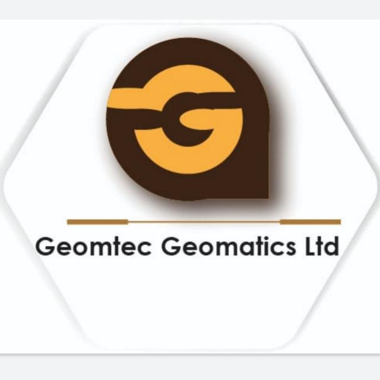

Engineering, GIS and Other Professional Services
Engineering, GIS and Other Professional Services
Geomtec Geomatics Limited (GGL) brings a fresh and innovative approach
to
consulting services, in the field of surveying for planning and
execution of
civil engineering schemes.
We offer services in Surveying, hire and sale of survey equipments,
remote
sensing and GIS Mapping and capacity development in the use of survey
equipments and software
Geomtec Geomatics Limited (GGL) brings a fresh and innovative approach
to consulting services, in the field of
surveying for planning and execution of civil engineering schemes.
Backed by highly trained and experienced
personnel in this
field, the company is the force behind successful surveys for
feasibility studies, designs and
implementation of major engineering projects in Kenya and the wider
East and Central Africa region.
Our goal is to exceed the expectations of every client by offering
outstanding customer service, increased
flexibility, and greater
value, thus optimizing and improving operation efficiency. Our
associates are distinguished
by their functional and technical expertise combined with their
hands-on experience, thereby eginsuring that our
clients receive
the most effective and professional service. The company is
incorporated in Kenya, with the
registered office in the capital city, Nairobi. It is 100% locally
owned; and is run by a board of three directors.
SURVEYING
HIRE/SALE OF /EQUIPMENTS
REMOTE SENSING / GIS MAPPING
CAPACITY DEVELOPMENT
Geotec Geomatics Limited (GGL) brings a fresh and innovative
approach to consulting services, in the field of surveying for
planning and execution of civil engineering schemes. Backed by
highly trained and experienced personnel in this field, the company is
the
force behind successful surveys for feasibility
studies, designs and implementation of major engineering
projects in Kenya and the wider East and Central Africa region.


Home
About
Services
Projects
contacts